question id: buck-shut-stove-1
Chap 8 Exercises
\[ \newcommand{\dnorm}{\text{dnorm}} \newcommand{\pnorm}{\text{pnorm}} \newcommand{\recip}{\text{recip}} \]
Exercise 1 Figure fig-smartphone-penetration shows the proportion \(P\) of the US cell-phone users who own a smart phone as a function of the year \(y\).
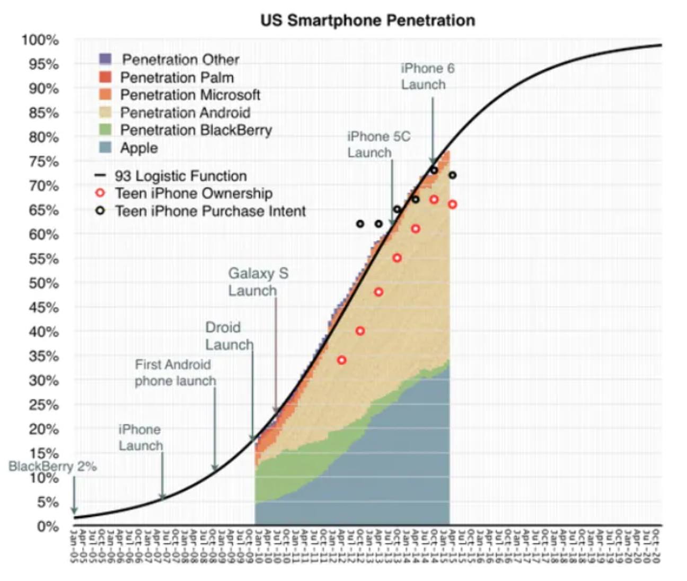
As a rule, when a quantity grows exponentially but is ultimately limited to some maximum level, the sigmoid is the choice for modeling. The proportion of smartphone owners grew exponentially during the early 2000’s. As the number of smartphones increased, the broader familiarity with and advertisement of smartphones also increased, which help sustain this exponential growth. However, adoption has slowed as smartphone penetration reaches the maximum carrying capacity. In other words, once everyone has a smartphone, the proportion of smartphone owners cannot increase—everyone already owns a smartphone. So, eventually the exponential growth must taper-off. According to several datasets, this inflection point occurred sometime between 2013 and 2014. This behavior is visible in the graphic below showing US smartphone penetration between Jan 2005 and Oct 2020 with raw data shown from 2010 to 2015.
- During the initial, exponential phase of smartphone penetration, what was the doubling time for penetration? (Note that the horizontal axis labels have 1/4 year inbetween them.)
About 2% About 6 months About 18 months About 24 months.
- Referring to the black sigmoid curve, what is the mean parameter?
Jan. 2010 Oct. 2010 July 2012 50%
question id: buck-shut-stove-2
- Referring to the black sigmoid curve, what is the standard deviation parameter?
Jan. 2010 Jan. 2011 Jan. 2014 19 months
question id: buck-shut-stove-3
Credit: 2021-2022 Math141Z/Math142Z development team.
Exercise 2 Each of the following plots shows a basic modeling function whose input scaling has the form \(x - x_0\). Your job is to figure out from the graph what is the numerical value of \(x_0\). (Hint: For simplicity, \(x_0\) in the questions will always be an integer.)
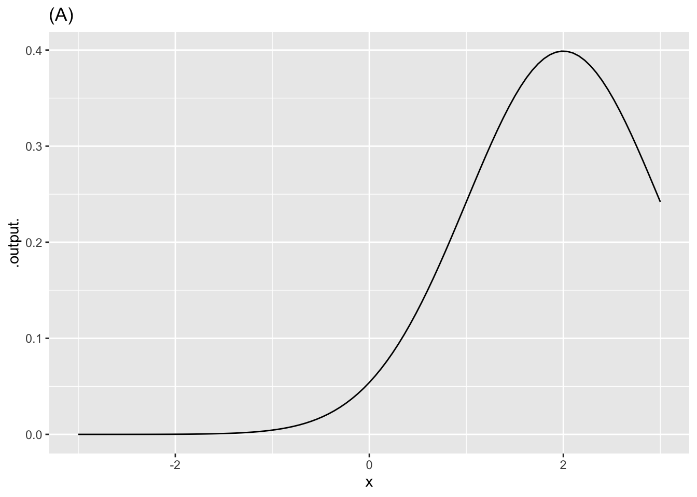
- In plot (A), what is \(x_0\)?
-2 -1 0 1 2
question id: fp-dnorm
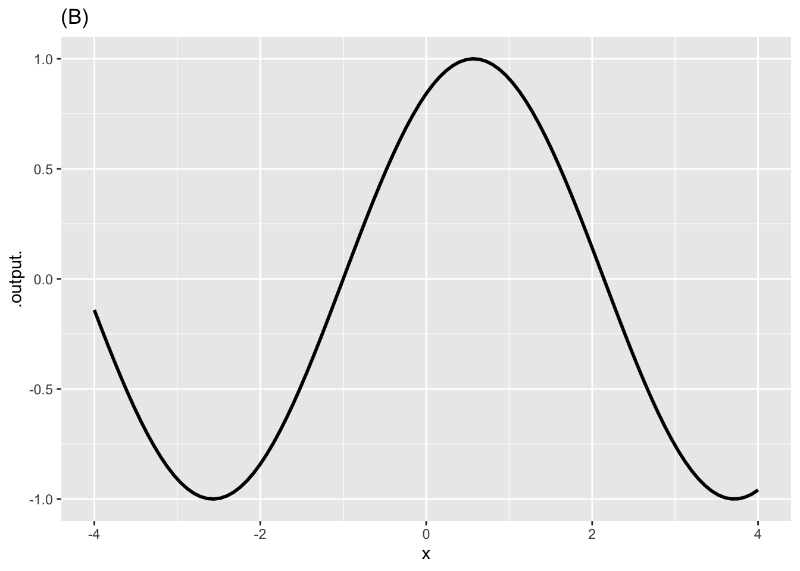
- In plot (B), what is \(x_0\)?
-2 -1 0 1 2
question id: fp-sin
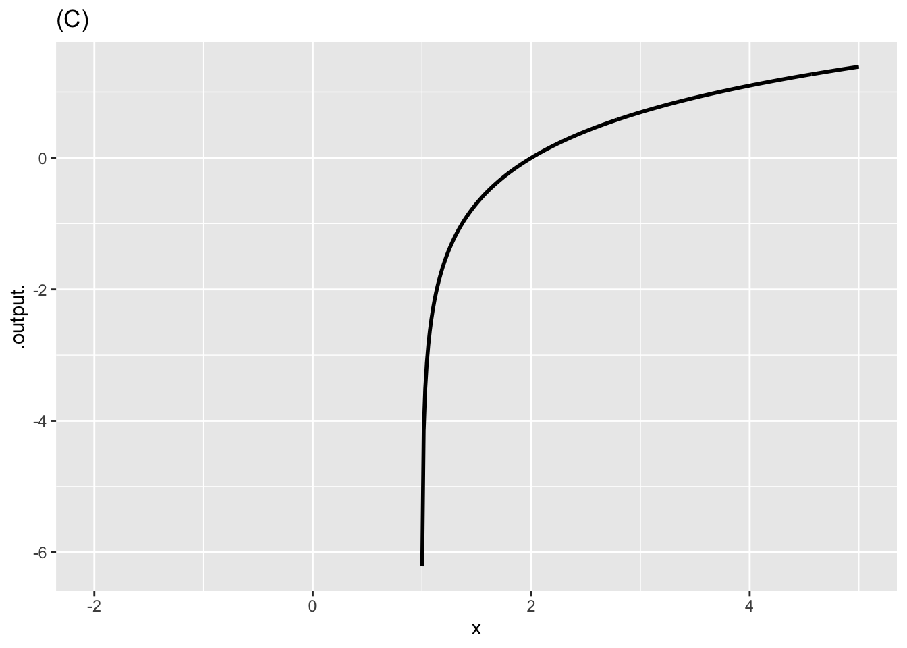
- In plot (C), what is \(x_0\)?
-2 -1 0 1 2
question id: fp-log
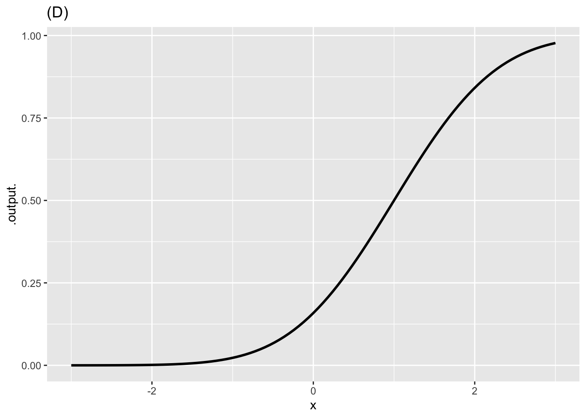
- In plot (D), what is \(x_0\)?
-2 -1 0 1 2
question id: fp-pnorm
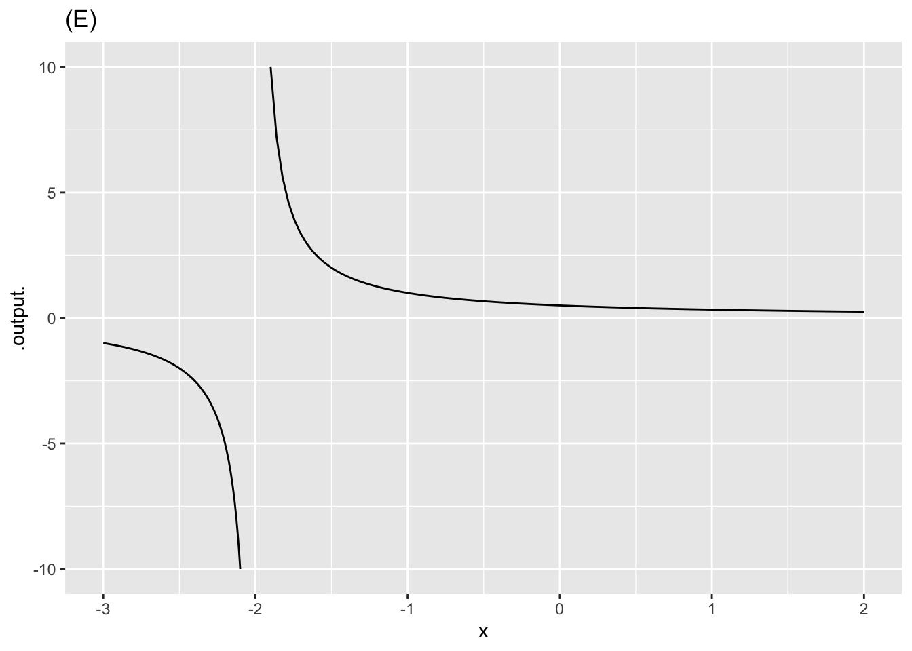
- In plot (E), what is \(x_0\)?
-2 -1 0 1 2
question id: fp-recip
Exercise 3 Each of the graphs shows two horizontal scales, one drawn on the edge graphics frame (black) and one drawn slighly above that (blue). Which horizontal scale (black or blue) corresponds to the pattern-book function shown in the graph?
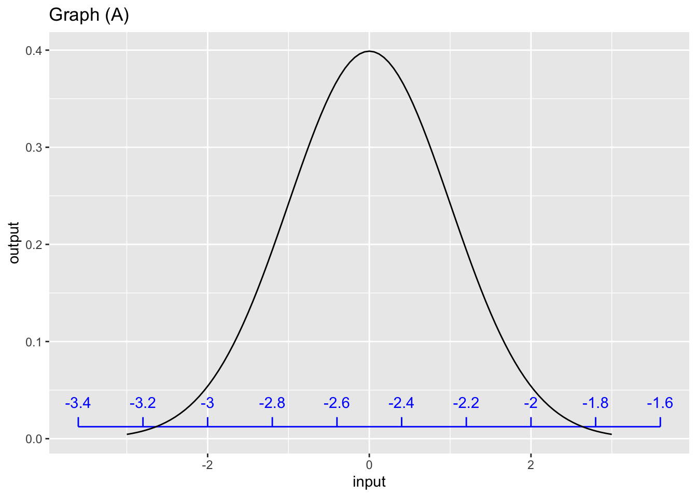
For graph (A), which scale corresponds to the pattern-book function?
black blue neither both
question id: siD-A
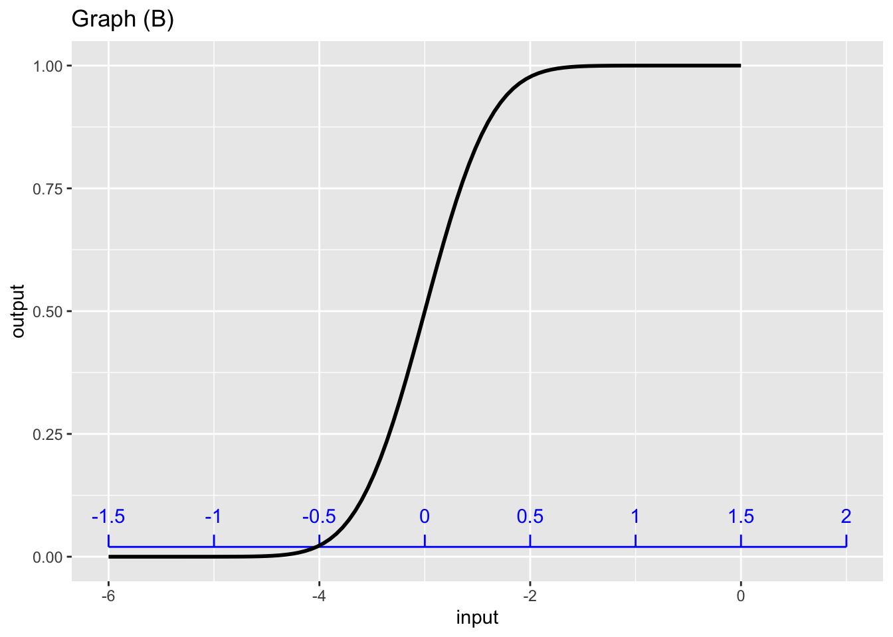
For graph (B), which scale corresponds to the pattern-book function?
black blue neither both
question id: siD-B
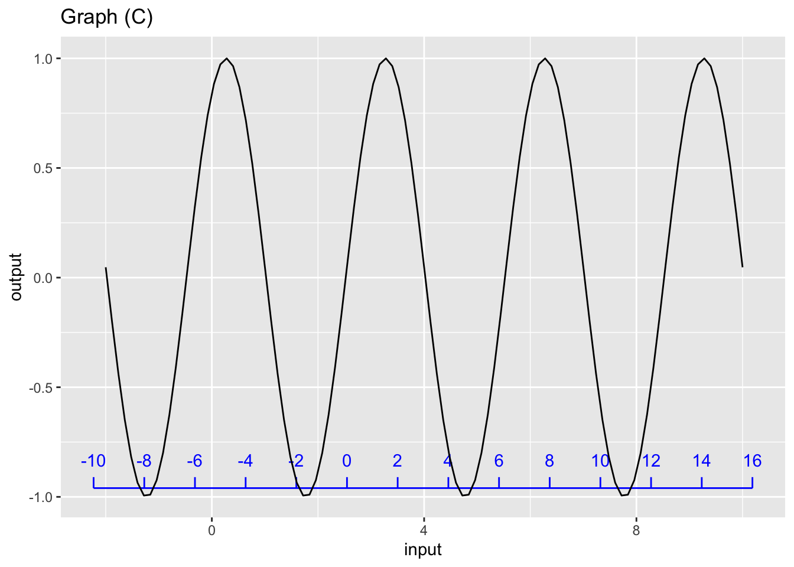
For graph (C), which scale corresponds to the pattern-book function?
black blue neither both
question id: siD-C
Exercise 4 Find the straight-line function that will give the value on the bottom (black) scale for each point \(x\) on the top (blue) scale. The function will take the top(blue)-scale reading as input and produce the bottom(black)-scale reading as output, that is: \[\text{black}(x) \equiv a (x - x_0)\]
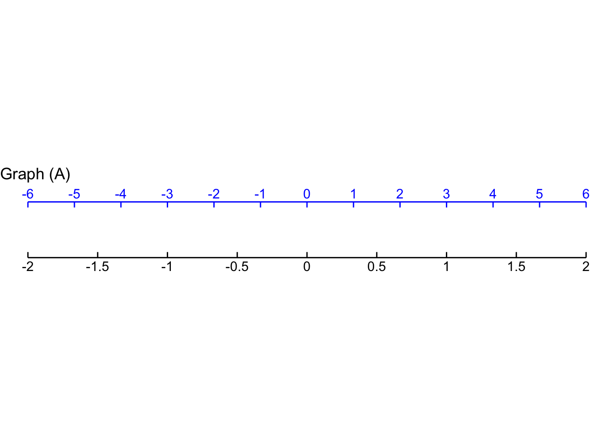
- For Graph A, which function maps blue \(x\) to the value on the black scale?
\(\frac{1}{3} x\) \(3\, x\) \(x + 3\) \(x - 3\)
question id: scale-input-2-A
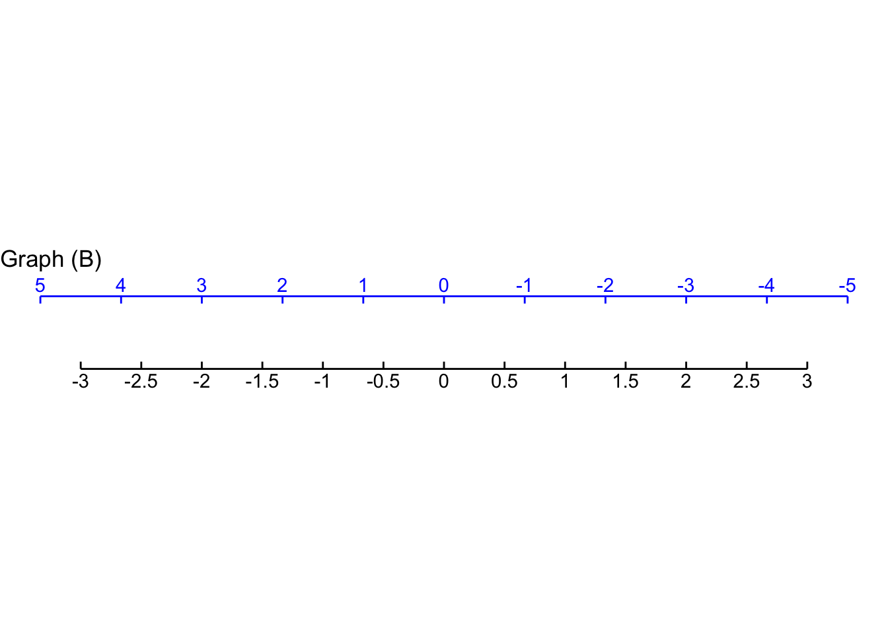
- For Graph B, which function maps blue \(x\) to the value on the black scale?
\(-\frac{2}{3}\,x\) \(\frac{3}{2} x\) \(\frac{2}{3} x\) \(-\frac{3}{2}x\)
question id: scale-input-2-B
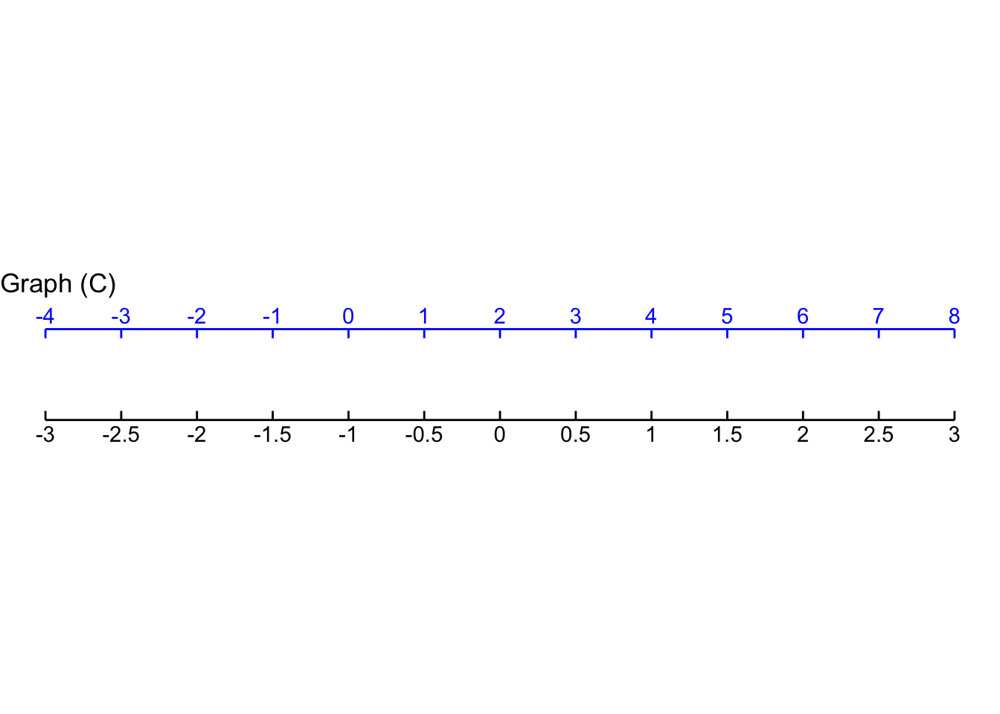
- For Graph C, which function maps blue \(x\) to the value on the black scale?
\(\frac{1}{2}(x - 2)\) \(3\, x\) \(2\,x\) \(2\,(x + 2)\)
question id: scale-input-2-C
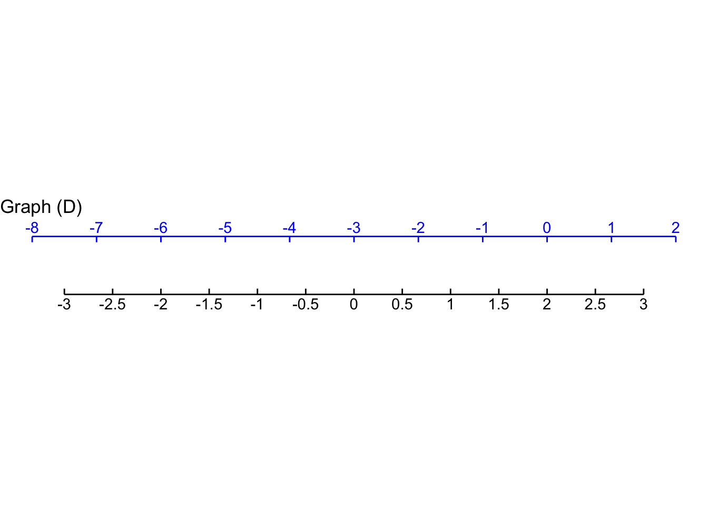
- For Graph D, which function maps blue \(x\) to the value on the black scale?
\(\frac{2}{3} (x + 3)\) \(\frac{3}{2} (x - 3)\) \(\frac{3}{2} (x+1)\) \(\frac{3}{2}(x - 2)\)
question id: scale-input-2-D
Exercise 5 The gaussian function is implemented in R with dnorm(x, mean, sd). The input called mean corresponds to the center of the bump. The input called sd gives the width of the bump.
- Active R chunk lst-plot-dnorm-sd makes a slice plot of
dnorm(x, mean=0, sd=1). By experimentally varying the value ofsd, figure out how you could estimate that value directly from the graph.
question id: hump-intro-sd
In @hump-graph-with-arrows, one of the double-headed arrows represents the sd parameter. The other arrows are misleading.

- Which arrow shows correctly the
widthparameter of the gaussian function in Figure fig-hump-graph-with-arrows?
top middle bottom none of them
question id: hump-intro-2
- What is the value of
centerin Figure fig-hump-graph-with-arrows?
-2 -1 -0.5 0 0.5 1 2
question id: hump-intro-3
Exercise 6 The distribution of adult heights is approximately Gaussian. The graph below shows the distribution of adult males and females separately. Use this graphic to answer the following questions.
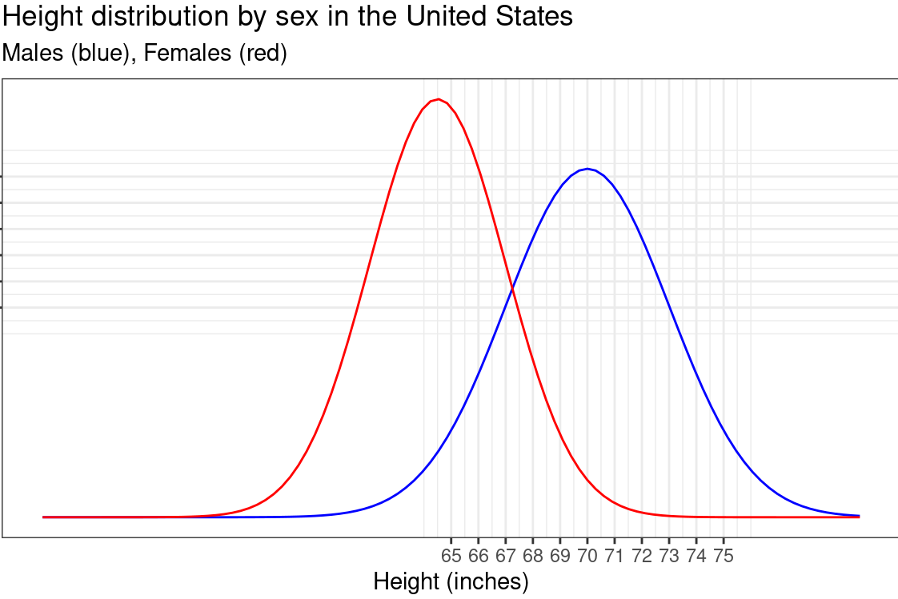
- Which sex has a larger mean height?
Males Females
question id: stg23-1
An important fact about the gaussian function is that the area under the graph is always 1. This means that, when comparing two gaussians, the taller one will be the narrower one.
- Which sex has a larger standard deviation of height?
Males Females
question id: stg23-2
The standard deviation of a gaussian can be estimated visually based on its graph. Let’s estimate the standard deviation for males. To do this, start at the peak of the male distribution. The output value at the peak is \(0.1329\). Find the output value that is 60% of this peak value. We’re looking for the value \[0.1329(0.6)=0.0797\approx0.08\] on the output (vertical) axis. Now, measure the half the width (i.e. along the horizontal axis) of the Gaussian along the line \[y=0.08\]. This is the standard deviation.
- Which of these is the best estimate of the standard deviation of the distribution of heights for males?
3 inches 6 inches 7 inches 8 inches
question id: stg23-3
- The female height distribution has a mean of 64.5 and standard deviation of 2.5. Which R command can we use to plot the Gaussian for females?
slice_plot(dnorm(x,64.5,2.5)~x, domain(x=0:64.5)
slice_plot(dnorm(x,64.5,2.5)~x, domain(x=50:80)
slice_plot(pnorm(x,64.5, 2.5)~x, domain(x=0:64.5))
pnorm(x,64.5,2.5)~x
question id: stg23-4
Credit: 2021-2022 Math 141Z development team
:::
Exercise 7 The Wikipedia entry on “Common Misconceptions” used to contain this item:
Some cooks believe that food items cooked with wine or liquor will be non-alcoholic, because alcohol’s low boiling point causes it to evaporate quickly when heated. However, a study found that some of the alcohol remains: 25% after 1 hour of baking or simmering, and 10% after 2 hours.
The modeler’s go-to function type for events like the evaporation of alcohol is exponential: The amount of alcohol that evaporates would, under constant conditions (e.g. an oven’s heat), be proportional to the amount of alcohol that hasn’t yet evaporated.
- Assume that 25% of the alcohol remains after 1 hour? If the process were exponential, how much would remain after 2 hours?
10% 25% 25% of 25% 75% 75% of 75%
question id: CTK1-1
- What is the half-life of an exponential process that decays to 25% after one hour?
15 minutes 30 minutes 45 minutes none of the above
question id: CTK1-2
- Assume that 25% of the alcohol remains after 1 hour? If the process were exponential, how much would remain after 2 hours?
10% 25% 25% of 25% 75% 75% of 75%
question id: CTK1-3
- What is the half-life of an exponential process that decays to 25% after one hour?
15 minutes 30 minutes 45 minutes none of the above
question id: CTK1-4
Let’s change pace and think about the “10% after 2 hours” observation. First, recall that the amount left after \(n\) halvings is \(\text{amount.left}(n) \equiv \left(\frac{1}{2}\right)^{\Large n}\) This is an exponential function with base 1/2.
You’re going to carry out a guess-and-check procedure to find \(n\) that gives \(\text{amount.left}(n) = 0.10\).
Active R chunk lst-cow-type-kayak-1 includes the definition of the amount.left() function. We start with a guess of \(n=0\), which is wrong. Change the guess until you get the output 10%.
- Use
amount.left()as defined in the scaffolding to guess-and-check how many halvings it takes to bring something down to 10% of the original amount.
2.58 3.32 3.62 3.94 4.12
question id: CTK1-5
- The answer you got in part C) is the number of halvings needed to reach 10%. If this number occurs in 2 hours (that is, 120 minutes), what is the half life stated in minutes.
30 35 36 38 42 47
question id: CTK1-6
Another way to find the input \(n\) that generates an output of 10% is to construct the inverse function to \(\text{amount.left}()\).
The computer already provides you with inverse functions for \(2^n\) and \(e^n\) and \(10^n\). Their names are log2(), log(), and log10() repectively. Using log2(), write a function named log_half() that gives the inverse function to \((1/2)^n\). Remember, the input to the inverse function corresponds to 10%; the output to the \(n\).
- The answer you got in part C) is the number of halvings needed to reach 10%. If this number occurs in 2 hours (that is, 120 minutes), what is the half life stated in minutes.
30 35 36 38 42 47
question id: CTK1-7
Suppose you compromise between the half-life needed to reach 25% after one hour and the half-life needed to reach 10% after two hours. Use, say, 33 minutes as the compromise half life. Using the sandbox, calculate how much would be left after 1 hour for this compromise half life, and how much left after 2 hours.
- How much is left after 1 hour and after 2 hours for a half life of 33 minutes?
28% and 8% 31% and 4% 30% and 9% 27% and 9%
question id: CTK1-8
Exercise 8 The graph shows the cumulative number of Ebola cases in Sierra Leone during an outbreak from May 1, 2014 (Day 0) to December 16, 2015. (Source: {MMAC} R package, Joel Kilty and Alex McAllister, Mathematical Modeling and Applied Calculus.) Put aside for the moment that the Ebola data don’t have the exact shape of a sigmoid function, and follow the fitting procedure as best you can.
gf_point(Cases ~ Day, data = MMAC::EbolaSierraLeone)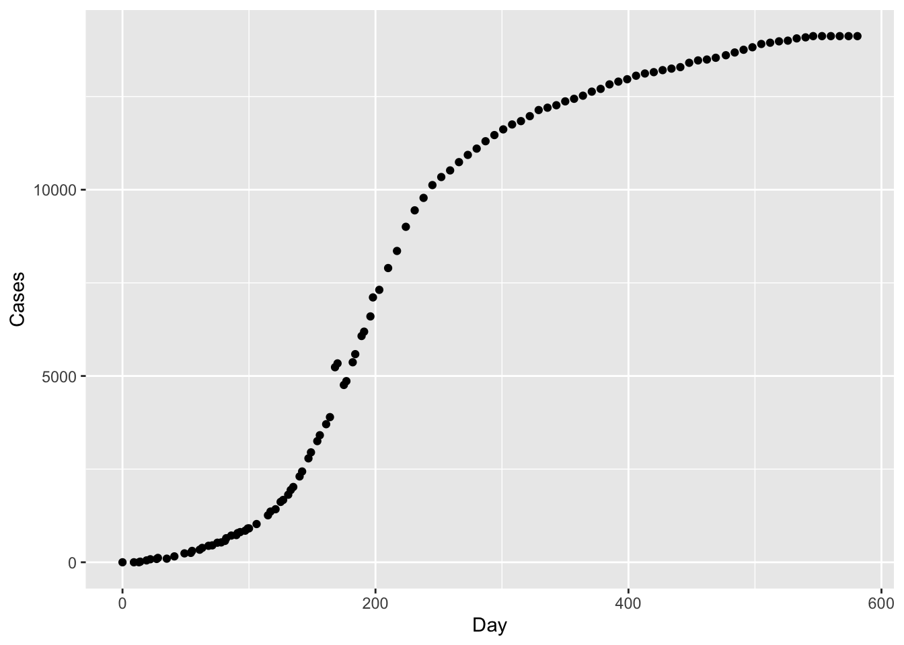
- Where is the top plateau?
About Day 600. About 14,000 cases About 20,000 cases None of the above
question id: ebola-sigmoid-1
- Where is the centerline?
Near Day 200 Near Day 300 At about 7000 cases
question id: ebola-sigmoid-2
- Now to find the
widthparameter. The curve looks more classically sigmoid to the left of the centerline than to the right, so follow the curve downward as in Step 4 of the algorithm to find the parameters. What’s a good estimate forwidth?
About 50 days About 100 days About 10 days About 2500 cases
question id: ebola-sigmoid-3
Exercise 9 Each of the curves in the graph is an exponential function \(e^{kt}\), for various values of \(k\).
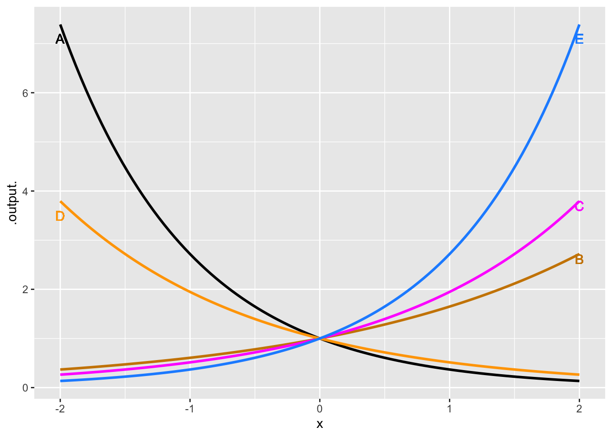
What is the order from \(k\) smallest (most negative) to k largest?
A, D, B, C, E
A, B, E, C, D
E, C, D, B, A
question id: WkG3cD
Exercise 10 The three functions created by the statements below are different in important ways. Explain what those differences are.
(Hint: Think about the parameter and weather statements like f(t) and f(t, P=17) both make sense.)
f1 <- makeFun(sin((2*pi/P)*t) ~ t)
f2 <- makeFun(sin((2*pi/6)*t) ~ t)
f3 <- makeFun(sin((2*pi/P)*t) ~ t, P=6)
question id: snake-teach-screen
Exercise 11 The performance \(p\) of a worker depends on the level of stimulation/stress \(s\) imposed by the task. This phenomenon has come to be known as the Yerkes-Dodson Stress Performance Curve, and you’ve probably experienced this yourself. If a task is not stimulating enough people become inactive/bored and performance is negatively impacted. If tasks are over stimulating (stressful), people become anxious and fatigued; they burn-out. The overall Yerkes-Dodson pattern is shown by the diagram.
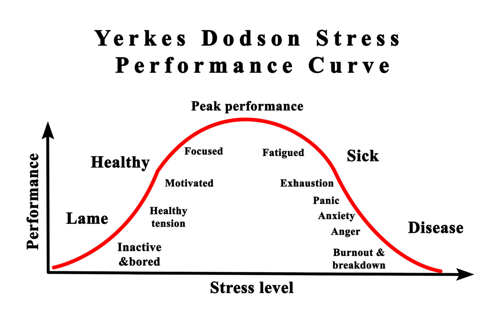
- Which of these functional forms best imitates the Yerkes-Dodson stress performance curve?
Proportional: \(p(s) \equiv as+b\)
Power-law: \(p(s) \equiv As^p\)
Exponential \(p(s) \equiv Ae^{kt}+C\)
Sine: \(p(s) \equiv A\sin\left(\frac{2\pi}{p}(t-t_0)\right)+B\)
Sigmoid \(p(s) \equiv A\cdot \pnorm(s,mean,sd)+B\)
Gaussian \(p(s) \equiv A\cdot \dnorm(s,mean,sd)+B\)
question id: hhmz-1
A manager must balance workloads between too much and too little stimulation to get peak performance out of each team member.
- Does Figure fig-yerkes-dodson suggest that people inevitably burn out as time elapses?
Yes. No.
question id: hhmz-2
Exercise 13 These three expressions
\[e^{kt}\ \ \ \ \ 10^{t/d} \ \ \ \ \ 2^{t/h}\]
produce the same value if \(k\), \(d\) and \(h\) have corresponding numerical values.
The code block contains an expression for plotting out \(2^{t/h}\) for \(-4 \leq t \leq 12\) where \(h = 4\). It also plots out \(e^{kt}\) and \(10^{t/d}\)
Your task is to modify the values of d and k such that all three curves lie on top of one another. (Leave h at the value 4.) You can find the appropriate values of d and k to accomplish this by any means you like, say, by using the algebra of exponents or by using trial and error. (Trial and error is a perfectly valid strategy regardless of what your high-school math teachers might have said about “guess and check.” The trick is to make each new guess systematically based on your previous ones and observation of how those previous ones performed.)
After you have found values of k and d that are suited to the task …
What is the numerical value of your best estimate of k?
0.143 0.173 0.283 0.320
question id: EB1-1
Exercise 12 What is the numerical value of your best estimate of d?
11.2 11.9 13.3 15.8
question id: EB1-2
Exercise 14 The table shows eight of the pattern-book function shapes.
| identity | square | recip | gaussian |
|---|---|---|---|
| 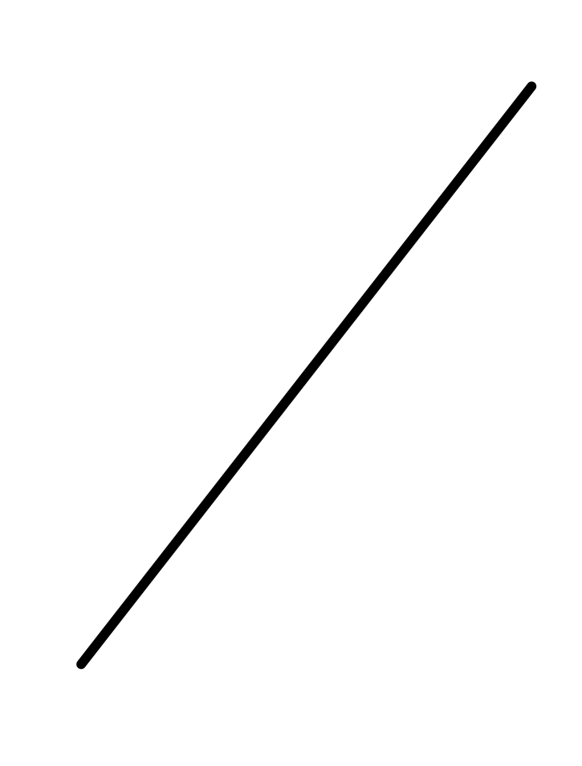 | 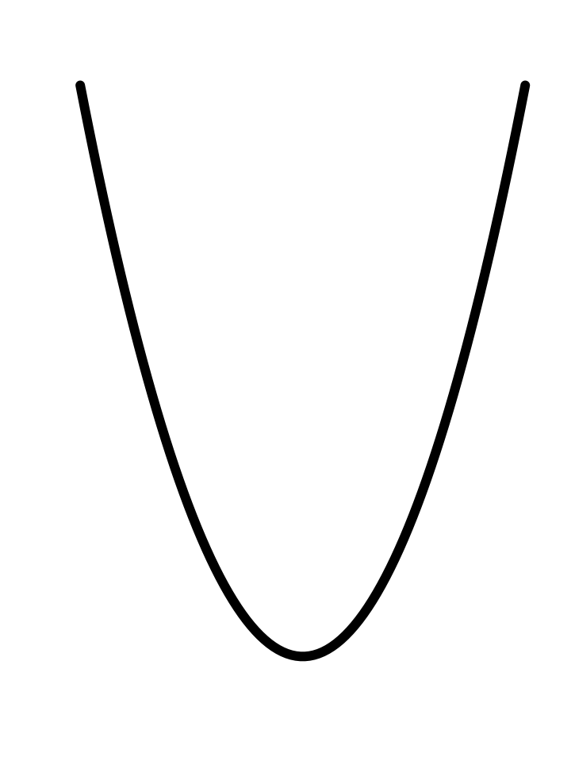 | 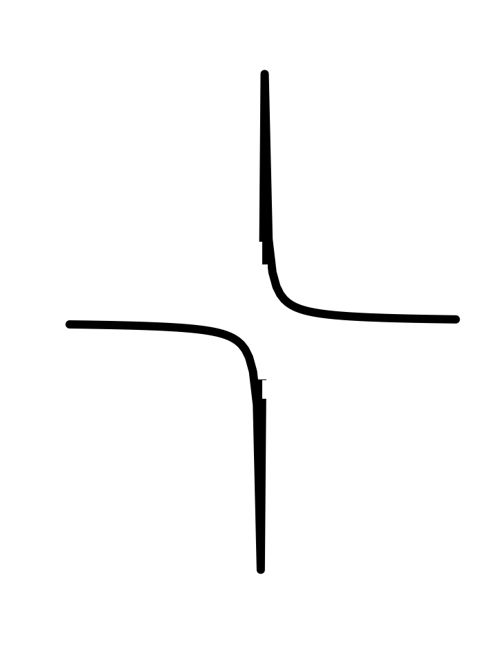 | 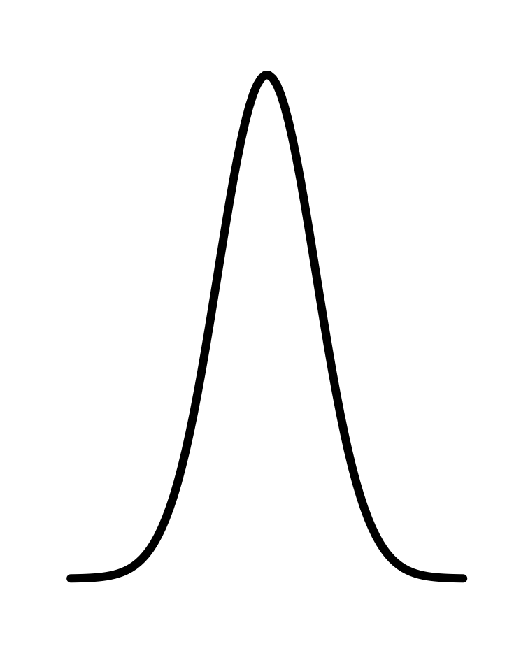 |
| 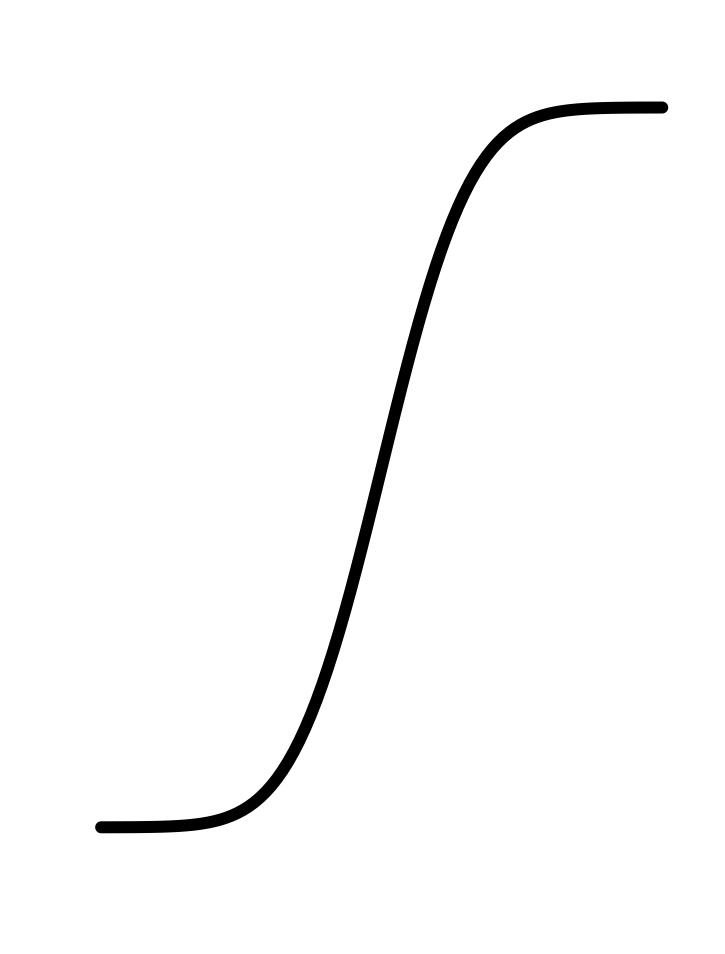 | 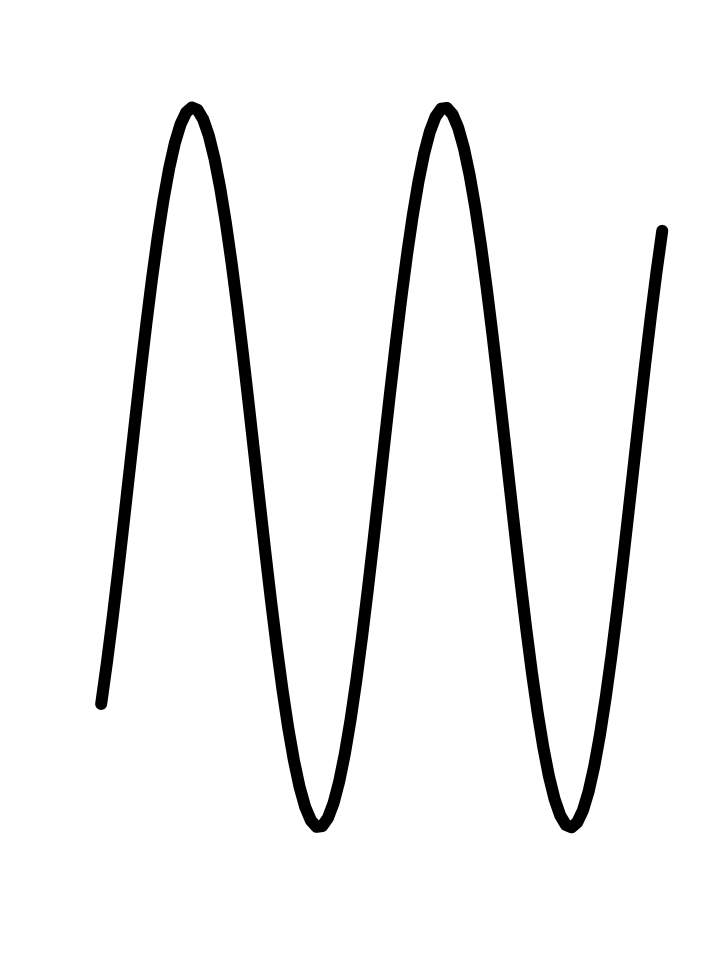 | 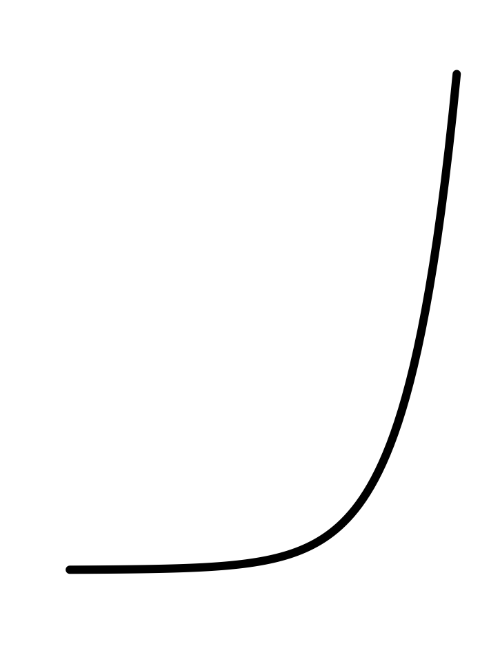 | 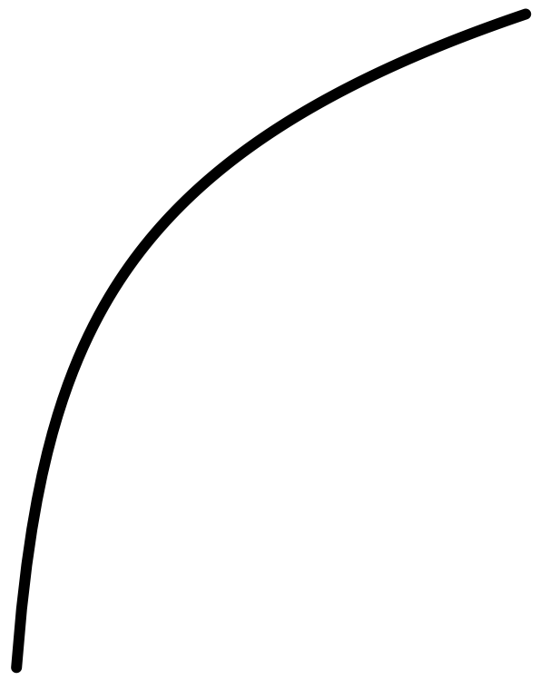 |
| sigmoid | sinusoid | exp | ln |
- Identify which of the eight shapes will remain unaltered even when flipped left-to-right.
question id: lion-chew-bowl-1
- Identify which of the eight shapes will remain unaltered if flipped left-to-right followed by a top-to-bottom flip.
question id: lion-chew-bowl-2
- Identify which of the eight shapes will give the same result when flipped left-to-right or top-to-bottom (but not both!).
question id: lion-chew-bowl-3
- Compare the doubly-flipped (first left-to-right then top-to-bottom) flipped exponential to the logarithm function. Is the doubly-flipped exponential equivalent to the logarithm? Explain your reasoning.
question id: lion-chew-bowl-4
Exercise 15 Compare the functions \(f_1 \equiv \dnorm(x, mn, sd)\) and \(f_2 \equiv \dnorm\left(\left[x-mn\right]/sd\right)\) by plotting them out using Active R chunk lst-dnorm-webr.
To construct the plots, you will have to pick specific values for the parameters \(mn\) and \(sd\). Make sure that you use the same \(sd\) and \(mn\) when constructing \(f_1()\) and \(f_2()\). You should be able to select a plotting domain by reference to the To aid comparison, use the same graphics domain for both plots.
- When \(\text{sd} = 1\), are the two functions the same?
Yes Yes, but only if \(\text{mn}=1\) Yes, but only if \(\text{mn}=0\) No
question id: dnorm8-1
- When \(\text{sd} \neq 1\), for any given mean, the two functions are not the same. What’s the relationship between \(f_1(x)\) and \(f_2(x)\)?
\(f_2(x) = sd\, f_1(x)\)
\(f_1(x) = sd\, f_2(x)\)
\(f_1(x) = sd^2 f_2(x)\)
\(f_2(x) = sd^2 f_1(x)\)
question id: dnorm8-2
Special topics
Exercise 16
Some of our pattern-book functions have a distinctive property called scale invariance. This means the graph of the function looks the same even when plotted on very different horizontal and vertical axes. The function \(\ln(x)\) plotted on two different scales in Figure fig-log-scale-invariance shows that the graph of the function has practically the same shape on either scale.
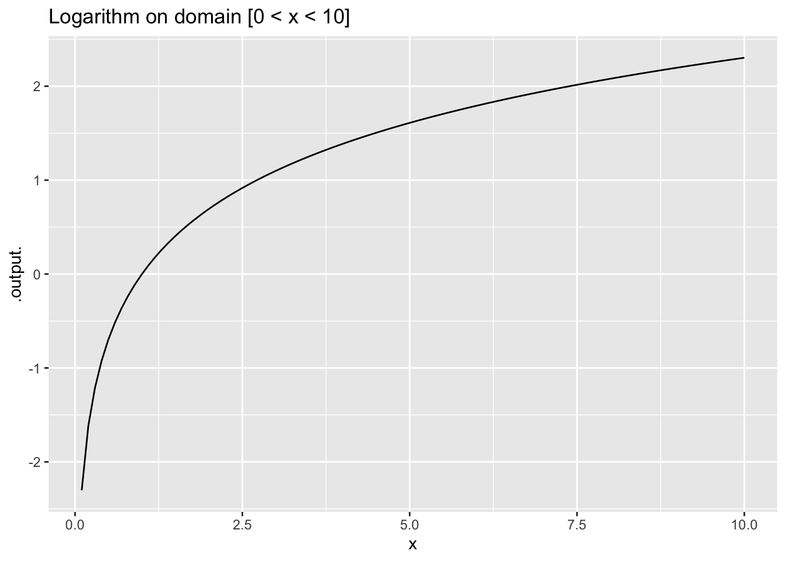
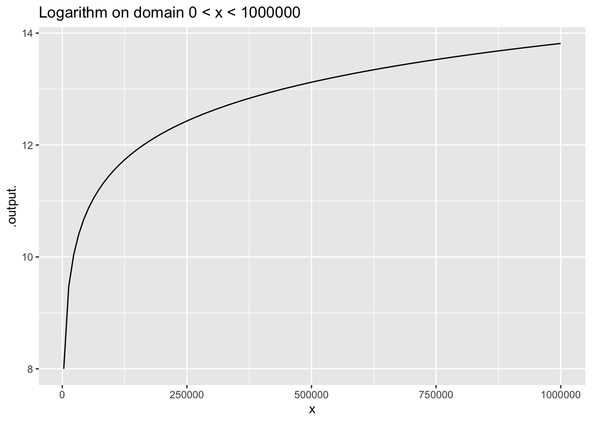
Figure fig-square-invariance shows a power-law function, \(g(x) \equiv x^2\), which is also scale invariant.
#| layout-ncol: 2
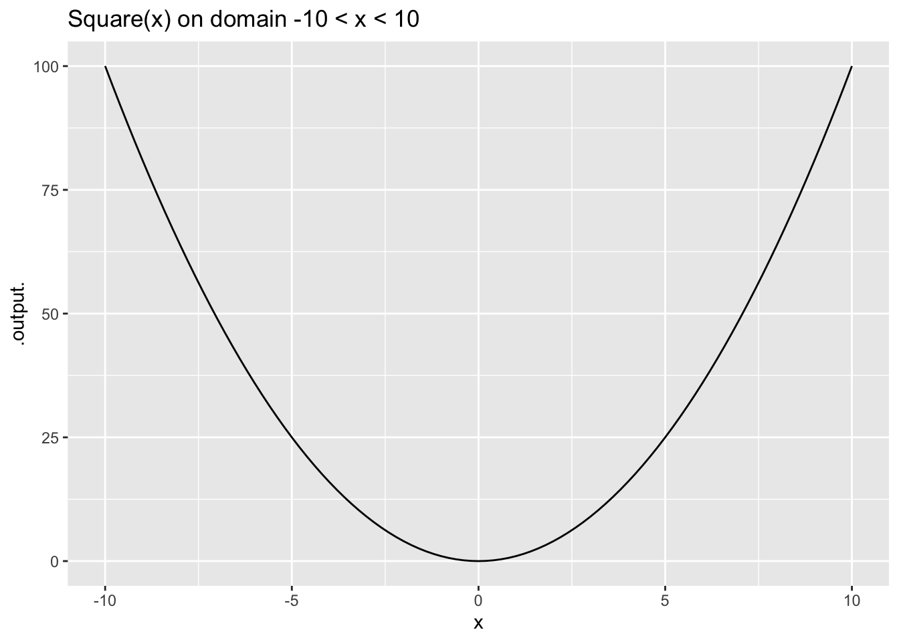
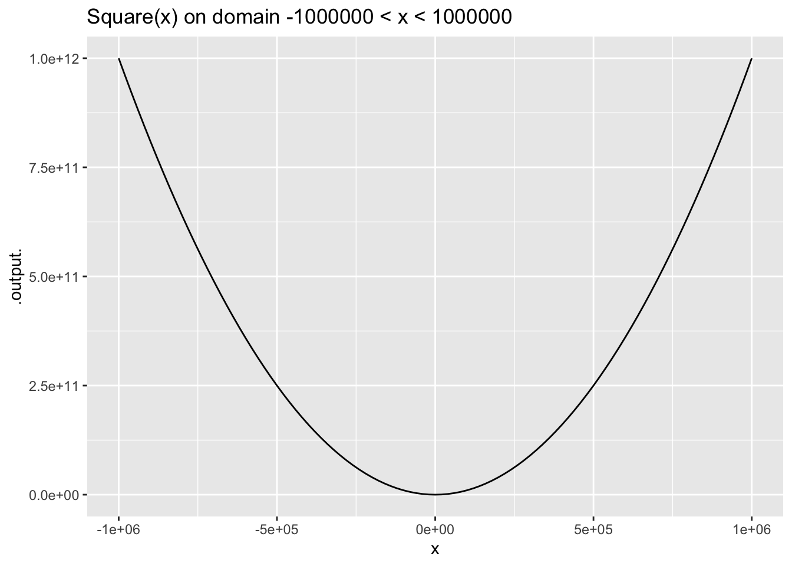
Other pattern-book functions are not scale invariant, for example \(\sin(x)\).


In contrast to scale-invariant functions, some of our pattern-book functions have a characteristic scale. This is a domain length over which the whole of a characteristic feature of the function is evident. Graphing on larger domains simply squashes down the characteristic feature to a small part of the graphic domain. For instance, in the \(\sin()\) function the cycle is a characteristic feature. The cycle in the pattern-book sinusoid has a characteristic length of \(2 \pi\), the length of the cycle. Consequently, the graph looks different depending on the length of the graphics domain in multiples of the characteristic length. You can see from Figure fig-sin-invariance that the graph on the domain \(-10 < x < 10\), that is, about 3 times the characteristic scale, looks different from the graph on the larger domain that has a length 30 times the characteristic scale.
The output of the sigmoid function runs from 0 to 1 but reaches these values only asymptotically, as \(x \rightarrow \pm \infty\). In defining a characteristic scale, it would be reasonable to look at the length of the domain that takes the output from, say, 0.01 to 0.99. In other words, we want the characteristic scale to be defined in a way that captures almost all the action in the output of the function. For a gaussian, a reasonable definition of a characteristic scale would be the length of domain where the output falls to about, say, 1% of its peak output.
- The gaussian (bump) function
dnorm()has a characteristic scale. Which of these is a domain length that can encompass the characteristic shape of the gaussian?
0.1 1 6 16 256
question id: bear-lay-plant-1
- The sigmoid function
pnorm()also has a characteristic scale. Which of these is a domain length that can encompass the characteristic shape of the sigmoid?
0.1 1 6 16 256
question id: bear-lay-plant-2
Throughout science, it is common to set a standard approach to defining a characteristic scale. For instance, the characteristic scale of an aircraft could be taken as the length of body. Gaussian and sigmoids are so common throughout science that there is a convention for defining the characteristic scale called the standard deviation. For the pattern book gaussian and sigmoid, the standard deviation is 1. That is much shorter than the domain that captures the bulk of action of the gaussian or sigmoid. For this reason, statisticians in practice use a characteristic scale of \(\pm 2\) or \(\pm 3\) standard deviations.
No answers yet collected